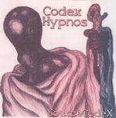

Home Artist links Label link

SourceCodeX - Codex Hypnos
| Artist: | SourceCodeX |
| Title: | Codex Hypnos |
| Label: | independent |
| Length(s): | 78 minutes |
| Year(s) of release: | 2004 |
| Month of review: | [06/2004] |
Line up
John W. Patterson - all computers
Tracks
| 1) | Sleep Til... | 7.21
|
| 2) | HALsleep | 4.02
|
| 3) | DreamingHyperSleepDawn | 5.35
|
| 4) | Dark Star Voids | 16.21
|
| 5) | Arrival And Fly-by | 12.13
|
| 6) | ForbiddenAmbientPlanet | 8.00
|
| 7) | Nazgul Caves | 14.32
|
| 8) | InnerWorldStopTime | 9.37
|
Summary
The music
So, what is it, Codex Hypnos, one might ask. The phrase "All songs done on a computer only" might give you something of an idea. The music in general is very peaceful. There is no percussion of interest, although some spingled keys at times sound as such. The occasional whooping swoosh gives a spacy feel. The threatening feel at times refers to that on the earlier works of Tangerine Dream or the more current works of Roz Vitalis. It does focus on the floating aspects of that material, though, there is hardly any experiment in it.
Only the occasional sampled voice breaks the rhythm, or maybe more: lull, of the music, without adding much.
Conclusion
This album is great for floating on. Nice, relaxed music, mostly for a background, since it does never push itself to the fore. Not the most original album in the world, but those into darker ambient stuff will enjoy themselves well enough with this one.
© Roberto Lambooy